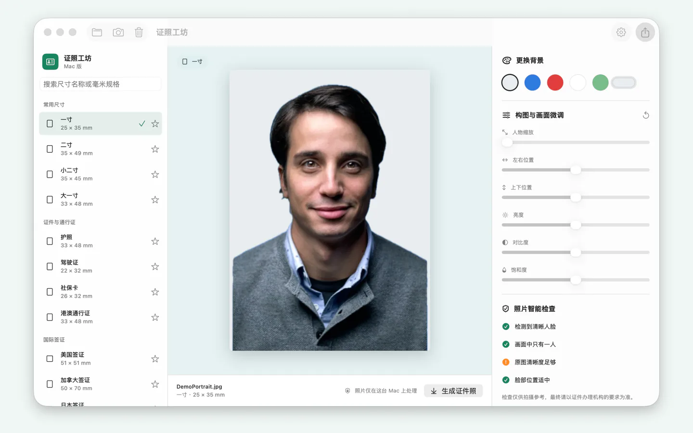
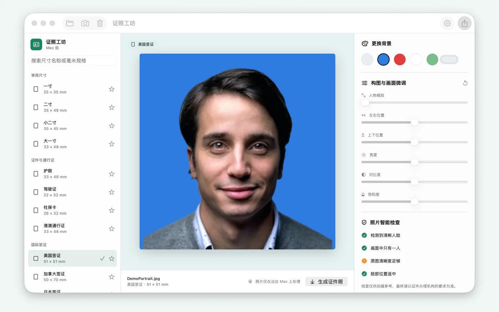
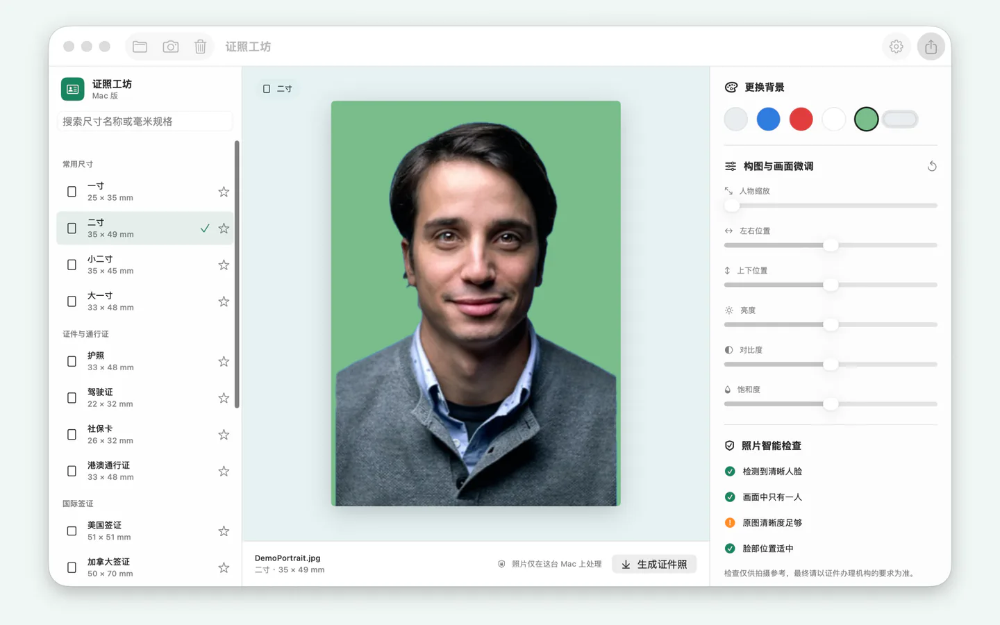
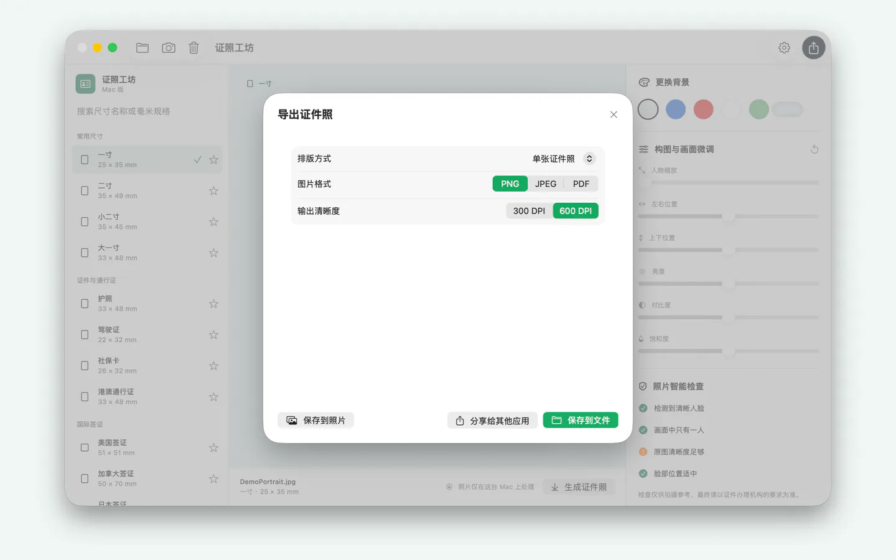
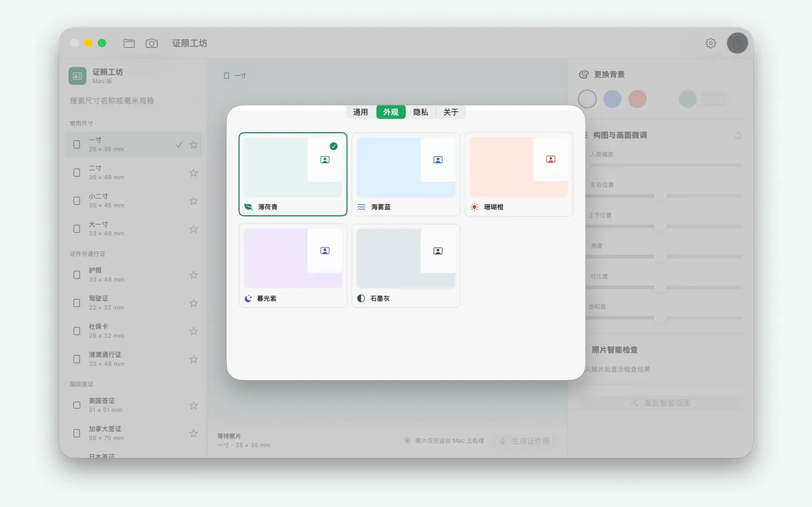

当前版本 v1.0 · iOS / iPadOS 17.0+ · macOS 13.0+
当前版本 v1.0 · iOS / iPadOS 17.0+ · macOS 13.0+ 照片制作
把一张普通照片，做成自然、端正的证件照。智能抠图、换背景、调整尺寸、自然美化与导出都在设备上完成。

本地人像处理
识别、背景移除、美颜调整与成图均使用 Apple 系统框架在设备上完成。
多端体验
支持 iPhone、iPad 与 Mac，照片始终由用户主动选择。
专业导出
支持 PNG、JPEG、PDF、文件大小控制和多种打印排版。
IOS ADVERTISING & PRIVACY
iOS 广告版说明
iPhone 与 iPad 版本可能展示开屏、横幅和原生广告。首次启动会先完成适用的 Google UMP 隐私选择与 Apple ATT 授权，再从“照片制作”等待页展示可用的开屏广告，关闭后进入主界面；无网络或无广告填充时会自动继续。拒绝 ATT 不影响照片制作功能。Mac 版本不使用 Google 移动广告或 ATT。
MAC APP STORE SCREENSHOTS
Mac 真实界面
Finder 导入、背景替换、尺寸选择、导出和皮肤设置均为实际运行截图；截图记录核心功能版本，当前应用显示名已更新为“照片制作”。




IPHONE & IPAD
移动端真实界面
从选择照片到换背景、尺寸、自然调整和导出，均为核心功能真实截图；当前版本名称已更新为“照片制作”，并加入广告隐私流程。